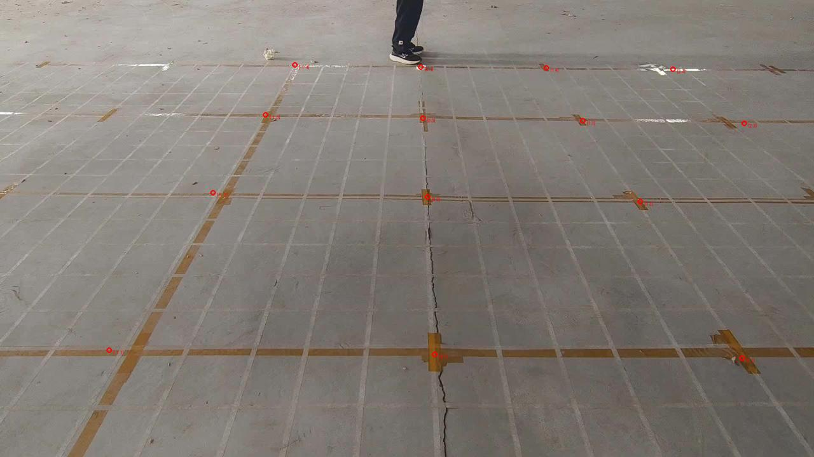
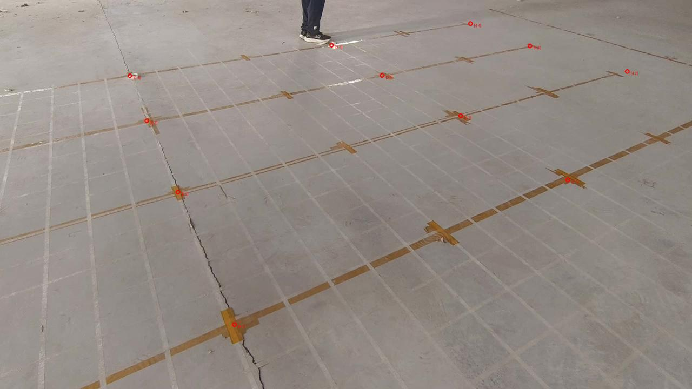
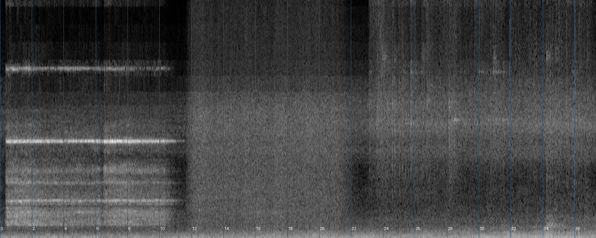
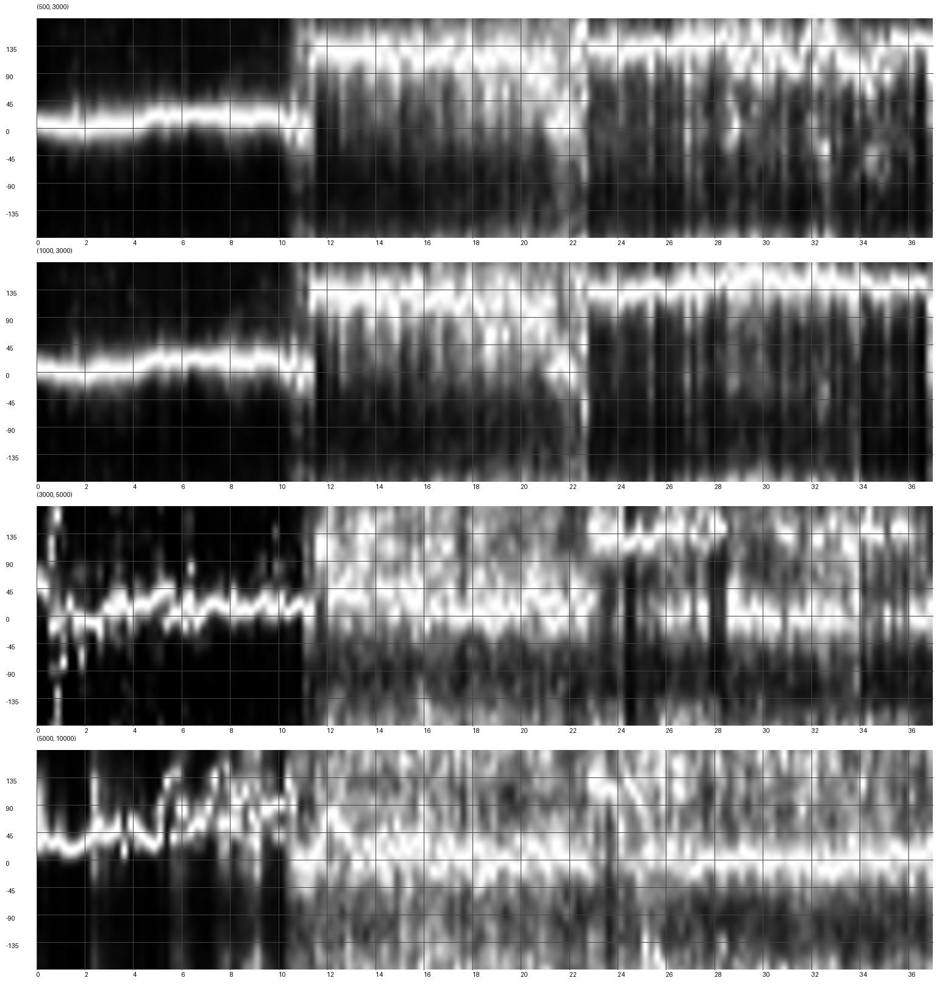

C01 · 相机
interval_s: [0.0, 18.0] coordinate_frame: camera
转动方向 turn_direction | right |
|---|---|
转动角度（度） turn_degrees | 30 |
置信度：较高。地面胶带网格的投影变化支持相机向右转。两个平面单应矩阵的共同内参拟合给出约 29.7°；取整为 30°。
evidence_ids: E5d3506f851304c41；证据原始时间覆盖 0–37.333333 s，包含本记录要求的 0–18 s。
网页副本仅重写大型原件下载地址；冻结 HTML 原文保持不变。空间证据原件见 Releases，视频预览仅供浏览。
17 条检查记录，按声源与时间索引。下列事实字段直接由最终 findings.json 渲染；每条记录均引用完整的宿主导出回执和可播放证据。
方向与角度来自原四通道的本地信号分析，并以视频地面网格估计相机转动。没有使用原生音频模型或语音识别。距离数值均为低置信度场景尺度估计，未进行声压、发声功率或声源高度标定，不能视为实测距离。世界位移的径向分量及无声时段运动也存在不确定性。
播放窗口使用宿主提供的有损简化双声道混音预览；该预览不保留完整四通道空间信息。复核空间分析请下载 MKV 原声证据。
interval_s: [0.0, 18.0] coordinate_frame: camera
转动方向 turn_direction | right |
|---|---|
转动角度（度） turn_degrees | 30 |
置信度：较高。地面胶带网格的投影变化支持相机向右转。两个平面单应矩阵的共同内参拟合给出约 29.7°；取整为 30°。
evidence_ids: E5d3506f851304c41；证据原始时间覆盖 0–37.333333 s，包含本记录要求的 0–18 s。
interval_s: [0.5, 37.0] coordinate_frame: camera
转动方向 turn_direction | right |
|---|---|
转动角度（度） turn_degrees | 30 |
置信度：较高。0.5 s 的视角与起始视角相近；后段地面网格基本不再改变。全段累计右转约 30°。
evidence_ids: E5d3506f851304c41；证据原始时间覆盖 0–37.333333 s，包含本记录要求的 0.5–37 s。
time_s: 9.0 coordinate_frame: camera-body
相机相对方向 direction | front |
|---|
置信度：中等。报警时段中较一致的时频方向分量位于左偏约 19°，按八方向最近扇区归入 front。靠近 front/front-left 分界，反射会影响分箱。
evidence_ids: E5d3506f851304c41；证据原始时间覆盖 0–37.333333 s，包含本记录要求的 8.75–9.25 s。
time_s: 9.5 coordinate_frame: camera-body
相机相对方向 direction | front-left |
|---|---|
距离估计（米） distance_m | 4 |
置信度：方向中等；距离低。9.5 s 的中频相干分量约左偏 23–25°，归入 front-left。distance_m 是低置信度场景尺度估计，非标定测距。
evidence_ids: E5d3506f851304c41；证据原始时间覆盖 0–37.333333 s，包含本记录要求的 9.25–9.75 s。
interval_s: [0.5, 37.0] coordinate_frame: mixed
与相机转动方向一致 same_turn_direction | yes |
|---|
置信度：中低。以报警可检测时段估计相对方位，再扣除相机约 30° 右转；声源世界方位总体略向右变化，故选择 yes。无声段没有额外轨迹信息。
evidence_ids: E5d3506f851304c41；证据原始时间覆盖 0–37.333333 s，包含本记录要求的 0.5–37 s。
interval_s: [0.5, 10.0] coordinate_frame: world
世界位移方向 motion_direction | front-right |
|---|
置信度：低。扣除相机转动后，报警方位从接近初始正前方变为略偏右；结合中频能量总体减弱，估计位移为 front-right。声源输出功率未标定，径向分量不确定。
evidence_ids: E5d3506f851304c41；证据原始时间覆盖 0–37.333333 s，包含本记录要求的 0.5–10 s。
time_s: 8.5 coordinate_frame: camera-body
转动方向 turn_direction | left |
|---|---|
转动角度（度） turn_degrees | 20 |
置信度：中等。8.5 s 的主要相干分量约左偏 17–21°，所需对中转动取 left、20°。
evidence_ids: E5d3506f851304c41；证据原始时间覆盖 0–37.333333 s，包含本记录要求的 8.25–8.75 s。
time_s: 2.5 coordinate_frame: camera-body
相机相对方向 direction | front |
|---|
置信度：较高。2.5 s 的主要中频方向峰接近 0°，归入 front。
evidence_ids: E5d3506f851304c41；证据原始时间覆盖 0–37.333333 s，包含本记录要求的 2.25–2.75 s。
time_s: 13.0 coordinate_frame: camera-body
相机相对方向 direction | back-left |
|---|
置信度：中等。塑料时段的中频相干峰主要位于左后侧；13 s 附近跨窗口的主要分量约 117–135°，归入 back-left。
evidence_ids: E5d3506f851304c41；证据原始时间覆盖 0–37.333333 s，包含本记录要求的 12.75–13.25 s。
time_s: 21.0 coordinate_frame: camera-body
相机相对方向 direction | left |
|---|---|
距离估计（米） distance_m | 4 |
置信度：方向中低；距离低。21 s 附近的中频整体方向较早段更接近左侧，估计为 left。频带间存在差异。distance_m 是低置信度场景尺度估计，非标定测距。
evidence_ids: E5d3506f851304c41；证据原始时间覆盖 0–37.333333 s，包含本记录要求的 20.75–21.25 s。
interval_s: [12.0, 21.0] coordinate_frame: world
世界位移方向 motion_direction | front |
|---|
置信度：中低。相机在该区间基本稳定；塑料声方向由左后侧向左侧变化。按近似相同范围判断，世界坐标中的总体位移为 front；距离变化未能独立标定。
evidence_ids: E5d3506f851304c41；证据原始时间覆盖 0–37.333333 s，包含本记录要求的 12–21 s。
time_s: 12.5 coordinate_frame: camera-body
转动方向 turn_direction | left |
|---|---|
转动角度（度） turn_degrees | 125 |
置信度：中等。12.5 s 的相干方向峰随频带和窗口约在左侧 120–140°；对中角采用 125°。
evidence_ids: E5d3506f851304c41；证据原始时间覆盖 0–37.333333 s，包含本记录要求的 12.25–12.75 s。
time_s: 16.0 coordinate_frame: camera-body
相机相对方向 direction | back-left |
|---|---|
距离估计（米） distance_m | 4 |
置信度：方向中低；距离低。16 s 的方向分量有较大分散；1.5–3 kHz 的相干峰及较窄中频带支持左后侧，选择 back-left。靠近 left/back-left 分界。distance_m 是低置信度场景尺度估计，非标定测距。
evidence_ids: E5d3506f851304c41；证据原始时间覆盖 0–37.333333 s，包含本记录要求的 15.75–16.25 s。
time_s: 25.0 coordinate_frame: camera-body
相机相对方向 direction | back-left |
|---|
置信度：较高。25 s 的中频相干方向峰约 129–133°，归入 back-left。
evidence_ids: E5d3506f851304c41；证据原始时间覆盖 0–37.333333 s，包含本记录要求的 24.75–25.25 s。
time_s: 27.5 coordinate_frame: camera-body
相机相对方向 direction | back-left |
|---|---|
距离估计（米） distance_m | 4 |
置信度：方向较高；距离低。27.5 s 的中频相干方向峰约 135–141°，归入 back-left。distance_m 是低置信度场景尺度估计，非标定测距。
evidence_ids: E5d3506f851304c41；证据原始时间覆盖 0–37.333333 s，包含本记录要求的 27.25–27.75 s。
interval_s: [0.5, 37.0] coordinate_frame: mixed
与相机转动方向一致 same_turn_direction | no |
|---|
置信度：中低。钥匙可检测时段中主要方位峰总体向左变化，而相机全段总体右转，因此选择 no。首尾变化较小，且无声段不能提供额外轨迹信息。
evidence_ids: E5d3506f851304c41；证据原始时间覆盖 0–37.333333 s，包含本记录要求的 0.5–37 s。
time_s: 34.5 coordinate_frame: camera-body
转动方向 turn_direction | left |
|---|---|
转动角度（度） turn_degrees | 145 |
置信度：较高。34.5 s 的 1–3 kHz 相干峰约 147–149°，邻近频带也支持左后侧；对中角采用 left、145°。
evidence_ids: E5d3506f851304c41；证据原始时间覆盖 0–37.333333 s，包含本记录要求的 34.25–34.75 s。
FFmpeg 将原 AAC 解码为四通道浮点采样；Python/NumPy/SciPy 分析通道协方差、短时傅里叶变换和相干方向峰。按信号表现将通道解释为 W,Y,Z,X；容器自身仅标注通用 4.0 布局，因此这项解释属于分析假设。方位取 atan2(W–Y 实部互谱, W–X 实部互谱)，左为正。结合相邻时间窗与频带，避免只凭单个能量峰判断方向。
报警时段主要检查 0.5–10 s，塑料时段检查 12–21 s，钥匙时段检查约 23.5–37 s。对于整段运动比较，只有声源可检测时段提供音频轨迹信息。八方向为每 45° 一个扇区；临界方向在各记录中说明。


0 s 原始抽帧 · 18 s 原始抽帧 · 检查时刻接触表

第一通道频谱概览；这是分析图，不替代音频证据。

相干方位分布，左为正；不同频带受反射和背景影响程度不同。
方法、假设及逐记录不确定性 · 相机几何拟合数据 · 相干方向峰数据 · 互谱与轨迹统计
同一完整片段支持全部记录，无需重复复制。原件采用 MKV / FFV1 / PCM；预览为有损简化双声道混音。所有时间均相对 incident.mp4 起点。
下载原四通道证据 · 播放完整混音预览 · 宿主完整返回结果
| evidence_id | E5d3506f851304c41 |
|---|---|
| start_s | 0 |
| end_s | 37.333333 |
| path | https://github.com/NanXiang-git/OmniALE_v2/releases/download/astra-three-cases-20261119/78abef16262a703c499c-E5d3506f851304c41.mkv |
| sha256 | 78abef16262a703c499c6646c9b65bb4eecb56b11120ece6688b8961f89ac65b |
| source_sha256 | 71d0ddbff4b2c53ead6c93c52f2da8a68d9d628fadfd191402b7d7780b3068fd |
| preview_path | evidence/E5d3506f851304c41_preview.mp4 |
| preview_sha256 | 187a7df2b7fba0066cbfb2222923bc2e360a9b223b47e30399cbb14927e62384 |
| preview_note | lossy simplified stereo; original multichannel evidence is MKV |
格式验证与封存不提供事实正确性反馈。证据回执证明媒体来源和时间覆盖，不代表方向或距离已被判定正确。